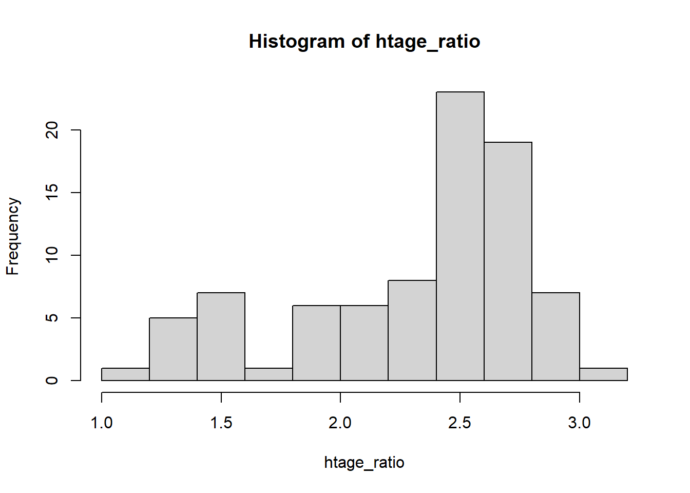

Module 2 Descriptive Measures
In the previous module, we thought about descriptive statistics using tables and graphs. Next, we summarize data by computing numbers. Some of these numbers you may already be familiar with, such as averages and percentiles. Numbers used to describe data are called descriptive measures.
Module Learning Objectives/Outcomes
After completing Module 2, you will be able to:
- Calculate and interpret measures of center.
- Calculate and interpret measures of variation.
- Find and interpret measures of position.
- Summarize data using box plots.
R objectives
- Generate measures of center.
- Generate measures of variability.
- Generate measures of position.
- Create box plots.
This module’s outcomes correspond to course outcomes (1) organize, summarize, and interpret data in tabular, graphical, and pictorial formats, (2) organize and interpret bivariate data and learn simple linear regression and correlation, and (6) apply statistical inference techniques of parameter estimation such as point estimation and confidence interval estimation.
2.1 Measures of Central Tendency
One research question we might ask is: what values are most common or most likely?
Mode: the most commonly occurring value. We can use this for numeric variables, but typically we use the mode when talking about categorical data.
Mean: this is what we usually think of as the “average”. Denoted \(\bar{x}\). Add up all of the values and divide by the number of observations (\(n\)): \[ \bar{x} = \frac{x_1 + x_2 + \dots + x_n}{n} = \sum_{i=1}^n \frac{x_i}{n} \] where \(x_i\) denotes the \(i\)th observation and \(\sum_{i=1}^n\) is the sum of all observations from 1 through \(n\). This is called summation notation.
Median: the middle number when the data are ordered from smallest to largest.
- If there are an odd number of observations, this will be the number in the middle:
{1, 3, 7, 9, 9} has median 7 - If there are an even number of observations, there will be two numbers in the middle. The median will be their average.
{1, 2, 4, 7, 9, 9} has median \(\frac{4+7}{2}=5.5\)
The mean is sensitive to extreme values and skew. The median is not!
| \(x\): 1, 3, 7, 9, 9 | \(y\): 1, 3, 7, 9, 45 | |
| Median | \(\text{median} = 7\) | \(\text{median} = 7\) |
| Mean | \(\bar{x} = \frac{29}{5} = 5.8\) | \(\bar{y} = \frac{65}{5} = 13\) |
Notice how changing that 9 out for a 45 changes the mean a lot! But the median is 7 for both \(x\) and \(y\).
If the mean and median are roughly equal, it is reasonable to assume the distribution is roughly symmetric. Since calculating the mean involves adding all the values, the mean will get pulled toward any extremes (and away from the median).
Because the median is not affected by extreme observations or skew, we say it is a resistant measure or that it is robust.
- Mean: symmetric, numeric data
- Median: skewed, numeric data
- Mode: categorical data
2.1.1 Weighted Means
Sometimes we have reason to calculate a weighted mean. For example, course grades are often calculated using a grading scheme that weights each category.
\[\bar{x}_w = w_1x_1 + w_2x_2 + \dots w_nx_n\]
In this case, each \(p\) represents the proportion attributed to that category. In general, we require that all of the \(w\) values sum to \(1\).
Example Consider the following grade distribution:
- Assignments: 15%
- Quizzes: 20%
- Exam 1: 15%
- Exam 2: 15%
- Project: 15%
- Final Exam: 20%
We can use this to calculate an overall grade. Suppose some student has the following score in each category
- Assignments: 92%
- Quizzes: 76%
- Exam 1: 56%
- Exam 2: 69%
- Project: 89%
- Final Exam: 70%
We can calculate their overall grade in the class using the weighted average formula.
\[\begin{aligned}\text{grade} &= 92(0.15) + 76(0.20) + 56(0.15) + 69(0.15) + 89(0.15) + 70(0.20) \\ &= 13.8 + 15.2 + 8.4 + 10.35 + 13.35 + 14 \\ &= 75.1\end{aligned}\] So this student would get a 75.5% in the class. (Notice that we changed the grade distribution values from percents to proportions!)
This is how learning management systems like Canvas automatically calculate grades.
Example: Now suppose a student has the following scores
- Assignments: 83%
- Quizzes: 71%
- Exam 1: 61%
- Exam 2: 68%
- Project: 91%
and has not taken the final exam yet. He really wants to pass the class with at least a C-, but is not sure what kind of final exam grade would allow him to do that.
If he wants to pass, he needs a minimum overall grade of 70%. So he needs his weighted average to be 70% or higher. We know everything except his final exam score, so we’ll make that \(F\) in our formula:
\[70 = 83(0.15) + 71(0.20) + 61(0.15) + 68(0.15) + 91(0.15) + F(0.20)\] To figure out what he needs to get on the final, we need to solve for F.
\[\begin{aligned} 70 &= 83(0.15) + 71(0.20) + 61(0.15) + 68(0.15) + 91(0.15) + F(0.20)\\ 70 &= 12.45+14.2+9.15+10.2+13.65+0.2 \\ 70 &= 59.65 + 0.2F \\ 10.35 &= 0.2F \\ F &= 51.75 \end{aligned}\]
So he needs to get at least a 51.75% on the final exam in order to pass the class.
Section Exercises
For exercises 1-5, calculate the mean and median. Then, determine which measure of center should be used to describe the data. Explain your thought process.- \(9,2,7,3,5\)
- \(56,87,21,95,236\)
- \(1.3, 2.4, 1.5, 2.1, 3.9, 3.2, 0.9\)
- \(4, 6, 2, 4, 5, 5, 7, 2, 5\)
- \(345, 654, 234, 123, 432, 152\)
-
Consider the following frequency distribution for students in a class.
Class Frequency freshman 8 sophomore 17 junior 21 senior 3 - How many students are in this class?
- What is the mode of these data?
- A class of intro stats students were asked where they were from. A bar chart of their responses is shown below.
- How many students are in this class?
- What is the mode of these data?
- Twenty-five Stat 1 students were asked how many siblings they have. The following data shows their responses: \[ 5, 1, 7, 3, 2, 0, 1, 4, 3, 2, 0, 2, 2, 0, 0, 5, 1, 1, 1, 5, 2, 3, 2, 4, 6\]
- Calculate the mean number of siblings.
- Determine the median number of siblings.
- What do the mean and median tell you about the skew/symmetry of this distribution? Based on this assessment, which measure of center would be the best choice for describing these data?
- A professor is teaching four sections of the same class and wants to know the overall average course grade of her students.
- We can weight these grades using the number of students in the class. Convert the number of students to proportions by dividing each number by the total number of students.
- Using your proportions from (a) as the weights, calculate the weighted mean grade for the professor’s four classes.

| Class 1 | Class 2 | Class 3 | Class 4 | |
|---|---|---|---|---|
| Mean grade | 78 | 81 | 76 | 80 |
| Number of students | 27 | 31 | 33 | 30 |
2.2 Measures of Variability
How much do the data vary?
Should we care? Yes! The more variable the data, the harder it is to be confident in our measures of center!
If you live in a place with extremely variable weather, it is going to be much harder to be confident in how to dress for tomorrow’s weather… but if you live in a place where the weather is always the same, it’s much easier to be confident in what you plan to wear.
We want to think about how far observations are from the measure of center.
One easy way to think about variability is the range of the data: \[\text{range} = \text{maximum} - \text{minimum}\] This is quick and convenient, but it is extremely sensitive to outliers! It also takes into account only two of the observations - we would prefer a measure of variability that takes into account all the observations.
2.2.1 Standard Deviation
Deviation is the distance of an observation from the mean: \(x - \bar{x}\). If we want to think about how far - on average - a typical observation is from the center, our intuition might be to take the average deviance… but it turns out that summing up the deviances will always result in 0! Conceptually, this is because the stuff below the mean (negative numbers) and the stuff above the mean (positive numbers) end up canceling each other out until we end up at 0. (If you are interested, Appendix A: Average Deviance has a mathematical proof of this using some relatively straightforward algebra.)
One way to deal with this is to make all of the numbers positive, which we accomplish by squaring the deviance.
| Deviance | Squared Deviance | |
|---|---|---|
| \(x\) | \(x - \bar{x}\) | \((x - \bar{x})^2\) |
| 2 | -1.2 | 1.44 |
| 5 | 1.8 | 3.24 |
| 3 | -0.2 | 0.04 |
| 4 | 0.8 | 0.64 |
| 2 | -1.2 | 1.44 |
| \(\bar{x}=3.2\) | Total = 0 | Total = 6.8 |
Variance (denoted \(s^2\)) is the average squared distance from the mean: \[ s^2 = \frac{(x_1-\bar{x})^2 + (x_2-\bar{x})^2 + \dots + (x_n-\bar{x})^2}{n-1} = \frac{1}{n-1}\sum_{i=1}^n (x_i - \bar{x})^2 \] where \(n\) is the sample size. Notice that we divide by \(n-1\) and NOT by \(n\). There are some mathematical reasons why we do this, but the short version is that it’ll be a better estimate when we talk about inference.
Finally, we come to standard deviation (denoted \(s\)). \[s = \sqrt{s^2}\] The standard deviation is the square root of the variance. We say that a “typical” observation is within about one standard deviation of the mean (between \(\bar{x}-s\) and \(\bar{x}+s\)).
In practice (including in this class), we will use a computer to calculate the variance and standard deviation.
2.2.2 The Interquartile Range
The interquartile range (IQR) represents the middle 50% of the data.
Recall that the median cut the data in half: 50% of the data is below and 50% is above the median. This is also called the 50th percentile. The \(p\)th percentile is the value for which \(p\)% of the data is below it.
To get the middle 50%, we will split the data into four parts:
| 1 | 2 | 3 | 4 |
|---|---|---|---|
| 25% | 25% | 25% | 25% |
The 25th and 75th percentiles, along with the median, divide the data into four parts. We call these three measurements the quartiles:
- Q1, the first quartile, is the median of the lower 50% of the data.
- Q2, the second quartile, is the median.
- Q3, the third quartile, is the median of the upper 50% of the data.
Example: Consider {1, 2, 3, 4, 5, 6, 7, 8, 9, 10}
- Cutting the data in half: {1, 2, 3, 4, 5 | 6, 7, 8, 9, 10}, the median (Q2) is \(\frac{5+6}{2}=5.5\).
- Q1 is the median of {1, 2, 3, 4, 5}, or 3
- Q3 is the median of {6, 7, 8, 9, 10}, or 8
Note: this is a “quick and dirty” way of finding quartiles. A computer will give a more exact result.
Then the interquartile range is \[ \text{IQR} = \text{Q3}-\text{Q1} \]
This is another measure of variability and is resistant to extreme values.
Which measure should we use?
- Mean and standard deviation: symmetric, numeric data
- Median and IQR: skewed, numeric data
Notice that we do not have a measure of variability for categorical data. Instead, if we want to think about variability for categorical data, we can use a frequency table or bar plot to visualize this variability.
2.2.3 Box Plots
Our quartiles are the foundation for constructing what we call a box plot, which summarizes the data with five five statistics plus extreme observations. These statistics are sometimes referred to collectively as the “five number summary”: the minimum, Q1, the median (Q2), Q3, and the maximum.
Drawing a box plot:
- Draw the vertical axis to include all possible values in the data.
- Draw a horizontal line at the median, at \(\text{Q1}\), and at \(\text{Q3}\). Use these to form a box.
- Draw the whiskers. The whiskers’ upper limit is \(\text{Q3}+1.5\times\text{IQR}\) and the lower limit is \(\text{Q1}-1.5\times\text{IQR}\). The actual whiskers are then drawn at the next closest data points within the limits.
- Any points outside the whisker limits are included as individual points. These are potential outliers.
(Potential) outliers can help us…
- examine skew (outliers in the negative direction suggest left skew; outliers in the positive direction suggest right skew).
- identify issues with data collection or entry, especially if the value of an outlier doesn’t make sense.
As with most things in this text, we won’t draw a lot of boxplots by hand. However, understanding how they are drawn will help us understand how to interpret them!
Section Exercises
- Twenty-five Stat 1 students were asked how many siblings they have. The following data shows their responses: \[ 5, 1, 7, 3, 2, 0, 1, 4, 3, 2, 0, 2, 2, 0, 0, 5, 1, 1, 1, 5, 2, 3, 2, 4, 6\]
- Use a computer to calculate the variance of the number of siblings.
- Calculate the standard deviation of number of siblings.
- What do the mean and standard deviation tell you about how many siblings a “typical” Stat 1 student has?
- Twenty-five Stat 1 students were asked how many siblings they have. The following data shows their responses: \[ 5, 1, 7, 3, 2, 0, 1, 4, 3, 2, 0, 2, 2, 0, 0, 5, 1, 1, 1, 5, 2, 3, 2, 4, 6\]
- Give the five number summary for these data.
- What is the IQR?
- Refer to the histogram of these data in Section 1.4, Exercise 1. Is the IQR or the standard deviation a better measure of spread for these data? Explain your reasoning.
- Draw or print out the following boxplot.
- Label the median, Q1, and Q3 on the boxplot.
- Label the whiskers and, if there are any, potential outliers.
- Use the boxplot to find the (approximate) interquartile range for eruption duration.
- Use the boxplots below to answer questions a-b. Note that these are called side-by-side boxplots and can be used to compare different categories. In this case, we are comparing weights of chickens who have been given various types of feed.

- What is the approximate median weight for chickens given meatmeal?
- What is the approximate IQR for chickens fed horsebean?
- Based on IQR, which feed has the greatest variability?
- Are there any potential outliers? How do you know?
2.3 Descriptive Measures for Populations
So far, we’ve thought about calculating various descriptive statistics from a sample, but our long-term goal is to estimate descriptive information about a population. At the population level, these values are called parameters.
When we find a measure of center, spread, or position, we use a sample to calculate a single value. These single values are called point estimates and they are used to estimate the corresponding population parameter. For example, we use \(\bar{x}\) to estimate the population mean, denoted \(\mu\) (Greek letter “mu”) and \(s\) to estimate the population standard deviation, denoted \(\sigma\) (Greek letter “sigma”).
| Point Estimate | Parameter |
|---|---|
| sample mean: \(\bar{x}\) | population mean: \(\mu\) |
| sample standard deviation: \(s\) | population standard deviation: \(\sigma\) |
…and so on and so forth. For each quantity we calculate from a sample (point estimate), there is some corresponding unknown population level value (parameter) that we wish to estimate.
We will discuss this in more detail when we discuss Random Variables and Statistical Inference.
R Lab: Descriptive Statistics and Boxplots
Finding Measures of Center
To find a mean in R, we use the command mean. Let’s use the Loblolly pine data again and find the mean tree height.
## [1] 32.3644From R, we can see that the sample mean height of the Loblolly pines is 32.36 feet. (Note that R will often print things out with ## and a number in square brackets. This is just to help us keep track of things if we write a lot of lines of code. You can ignore that number in the brackets!)
Is a mean the appropriate measure of center? We can quickly check the skew with a histogram:

It might be a little bit hard to tell with this histogram, but it does not look particularly skewed. Let’s use our other trick: if the mean and median are approximatly equal, we can say the distribution is approximately symmetric (and therefore the mean is an appropriate measure of center). To calculate the median, we use the command median:
## [1] 34The sample median of the Loblolly pine heights is 34 feet. Since the mean and median are approximately equal, it would be reasonable to use the mean in this case.
To find a mode, we will use the table command. (Recall that this will generate a frequency distribution, from which you can take the mode.)
## gender
## Female Male Other
## 2 1 1Finding Measures of Variability
To find a range in R, we get started using the command range. Let’s keep using the Loblolly pine data and find the mean tree height.
## [1] 3.46 64.10This command gives us the minimum and maximum values. Then to calculate the range, we would find \(64.10 - 3.46\). We can also do this in R, because R doubles as a calculator!
## [1] 60.64The sample range of the Loblolly pine heights is 60.64 feet.
To find the variance and standard deviation, we use the commands var and sd, respectively:
## [1] 427.3979The sample variance of the Loblolly pine heights is 427.4.
## [1] 20.6736The sample standard deviation of the Loblolly pine heights is 20.67 feet.
Measures of Position
We can get the quartiles quickly using the summary command. This will also give us the minimum, mean, and maximum. That’s fine!
## Min. 1st Qu. Median Mean 3rd Qu. Max.
## 3.46 10.47 34.00 32.36 51.36 64.10So \(Q1 = 10.46\), \(Q2 = \text{Median} = 34\), and \(Q3 = 51.35\). We can also quickly get the interquartile range using the IQR command.
## [1] 40.895Box Plots
To create a boxplot in R, we use the command boxplot. We can use some of the same arguments we used with the hist command to give it titles and color:
mainis where I can give the plot a new title. (Make sure to put the title in quotes!)ylabis the y-axis (vertical axis) title.colallows us to give R a specific color for the bars. Notice that I also have to put the color in quotes.
R will automatically create the entire box plot, including showing any outliers. (Which we should note that there aren’t any in the height variable!)
Course Survey Data
To access the course survey data, enter the following command, replacing the TYY with the appropriate semester, where T is the term (f for fall; s for spring) and YY is the year.
For example, for spring semester 2024, this command would look like:
## [1] "Use the command `str(survey)` to view the variables in the data."
## [1] "The command `attach(survey)` will allow you to access the variables directly."This command references some R code I have on my website that both reads in the data and cleans it up a little bit so that it’s ready for you to use. The data saved in R will be called survey.
Note: if you happen to try this out before I get this semester’s data uploaded, you’ll get an error along the lines of “cannot open the connection”. In the meantime, you may use the example code above to get an idea for what the data might look like in R.
To figure out exactly what we’re working with, we will use the str command:
## 'data.frame': 21 obs. of 14 variables:
## $ haircolor : Factor w/ 3 levels "Black","Blonde",..: 1 1 1 1 3 2 3 1 1 3 ...
## $ numpets : int 0 0 0 12 2 1 1 0 0 2 ...
## $ wherefrom : Factor w/ 4 levels "Bay Area","Other California",..: 4 1 4 1 1 4 4 1 4 1 ...
## $ height : num 5.75 5.9 5.58 5 5 ...
## $ sleep : int 6 7 6 6 8 7 8 7 6 9 ...
## $ pets : Factor w/ 2 levels "No","Yes": 1 1 1 2 2 2 2 1 1 2 ...
## $ schooldays : int 5 5 4 5 5 3 5 3 4 3 ...
## $ schoolperiod: Factor w/ 4 levels "College","Elementary School",..: 1 3 3 4 3 3 2 1 3 2 ...
## $ siblings : int 5 1 7 3 2 1 4 3 2 2 ...
## $ siborder : Factor w/ 4 levels "Middle child",..: 2 4 1 2 1 2 4 1 1 4 ...
## $ job : Factor w/ 2 levels "No","Yes": 2 2 2 1 1 2 2 1 1 2 ...
## $ exercise : int 0 5 0 3 0 4 1 0 0 3 ...
## $ units : int 8 15 12 12 16 15 12 15 16 12 ...
## $ major : Factor w/ 8 levels "Biology","Business",..: 1 2 2 6 6 2 2 5 6 2 ...The stuff shown in the column on the left are all of the variable names. I try to name these to match the survey questions in an intuitive way, but if you’re not sure which variable matches which survey question, there will be additional information available on Canvas.
The stuff shown on the right gives some information about the variable type. If it says int or num, those are numeric variables. Variables that say Factor, are categorical and the “levels” are the different categories in the data.
Finally, to use these variables directly, use the command attach(survey).
Your Turn
- Select a numeric variable from this semester’s course survey data. Find the following summary statistics for that variable:
- mean
- median
- standard deviation
- interquartile range
- Create a histogram of the numeric variable you chose in (7). Make sure to give it an appropriate title and axis labels.
- Select a categorical variable from this semester’s course survey data. Find the following:
- frequency distribution
- mode
- Create a bar plot of the categorical variable you chose in (9). Make sure to give it an appropriate title and axis labels.